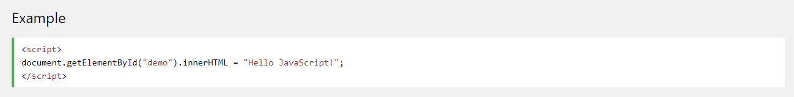

This is the folder for the website
My goals for this year, despite these circumstances, is to get a firm grasp of html. This site, although not the prettiest, is my first step into learning. I used a lot of css to try to improve the look, but it definitely still has that first time "htmler" look
I realized that JavaScript could also be used to improve a site. This would be a great thing to learn and I'm very interested. 
Hopefully, by the end of this year, I can make my sites not look like I haven't been using html for long. It reminds me of editing a video in Windows Movie Maker, but trying to make it look like a normal video rather than the god awful transitions that it provides to mask the fact that I'm using crappy software
Click on the text below to where you want to go